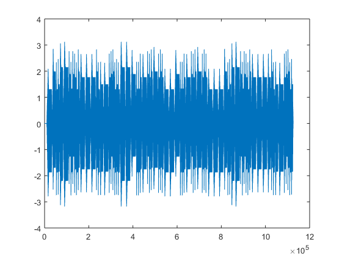

%değişkenler tanımlandı fid=fopen('notalar.txt');%notalar.txt actık Notalar=fscanf(fid,'%c'); oktavdegeri=1; [nota,b,c]=textread('Notalar.txt','%s %s %s'); %notalar.txt okuyoruz fs=11000;%örnekleme frekansı ds=round(fs/100);%duraklama suresı go=round(fs/10);%gecıkme suresı notalar=zeros(1,fs);%1 den fs ye kadar 0 dan dizi olusturduk a=zeros(1,length(notalar));%1 den notaların uzunluguna kadar 0lardan dizi olusturduk durak=zeros(1,ds);%durma süresi boyutunda sıfırdan oluşturduk. oktav=str2num(cell2mat(b));
%oktav ve nota bilgisini vererek frek fonksiyonundan frekans bilgisini döndürüyoruz. %frekans ve vuruş bilgisini göndererek note fonksiyonuna her notanın %sinyalini oluşturup bu sinyalleri de duraklama süresi ile birlikte %birleştirerek notalar matrisine atıyoruz. for i=1:(length(nota)) vurus((i),1)=str2num(cell2mat(c(i,1))); frekans((i),1)=frek(nota((i),1),oktav((i),oktavdegeri)); [x,t]=note(frekans((i),1),vurus((i),1)); notalar=[notalar durak x]; end plot(notalar)
%notalar sinyal dizininin herbir elemanının %30'u alınarak gecikme süresi kadar ötelenerek echolandı eklendi. notalarecho=zeros(1,(length(notalar)));%echo ekleme işlemleri asagıda devam ediyor for i=1:(length(notalar)) f=(go+i); if f<(length(notalar)) notalarecho(i)=notalar(i)*0.3+notalar(f); else notalarecho(i)=notalar(i)*0.3+0; end end plot(notalarecho)
ekoyu normalize ederek genliği 1'e çekiyoruz.
normalizenotalarecho=zeros(1,(length(notalar))); normalizenotalarecho=notalarecho/max(abs(notalarecho)); sound(normalizenotalarecho) plot(normalizenotalarecho)